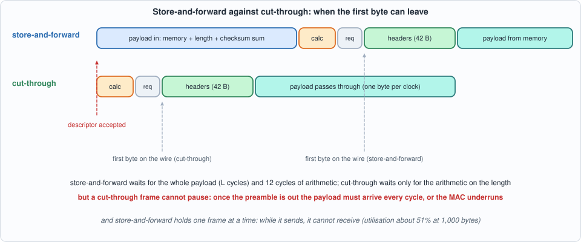
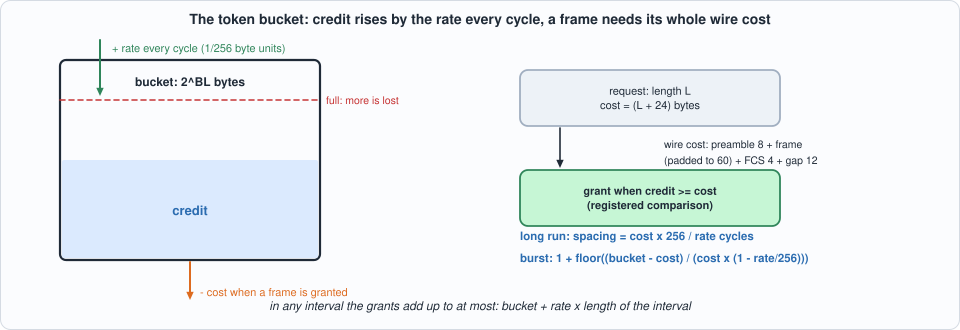
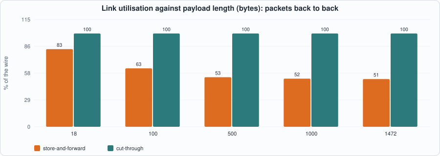
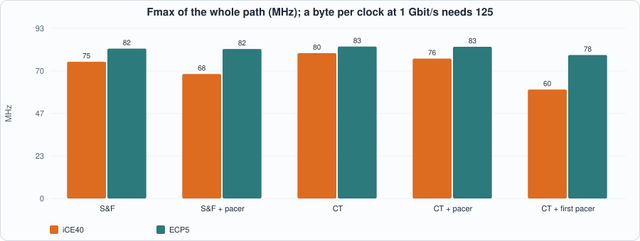
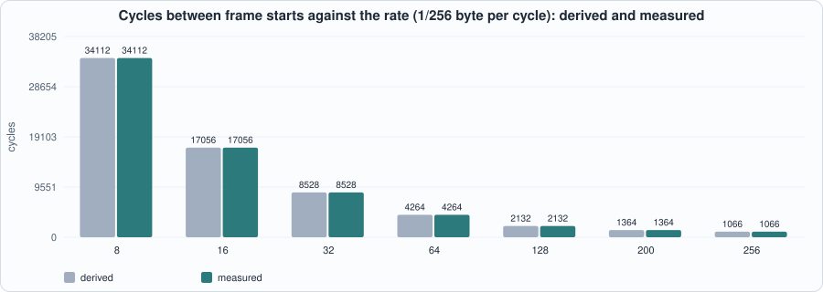

11. Egress: Building UDP Frames, Store-and-Forward Against Cut-Through, and a Token-Bucket Pacer¶
About the kestrels in this picture
- Mauritius kestrel (Falco punctatus) lives only on the island of Mauritius. By the mid-1970s only a handful of wild birds were known (the figure usually quoted is four); captive breeding and release programmes brought the population back to hundreds.
- American kestrel (Falco sparverius) is the smallest falcon in North America and is found from Alaska to South America. The sexes differ in plumage: males have blue-grey wings, females are barred rufous. It hunts insects and small vertebrates from perches and by hovering.
The scene is imaginary and the birds are stylised drawings.
What you will see: the transmit side of a UDP node. Two frame builders that turn a payload into an Ethernet/IPv4/UDP frame with correct lengths and checksums and hand it to Chapter 8's mac_tx (which pads, appends the FCS and keeps the gap): a store-and-forward builder that holds the payload in a memory until it knows its length and checksum, and a cut-through builder that is told the length first and sends the headers before the payload arrives. And a pacer, a token bucket that decides when a frame may start so that traffic leaves at a configured rate. The chapter measures what each design costs in time, in link utilisation and in clock, and it contains one design that failed its clock and was rebuilt.
What you need to know first: Chapter 8 (mac_tx), Chapter 9 (the Internet checksum, the deferred-carry accumulator, and the header model that this chapter's frames are checked against).
What this chapter builds: rtl/udp.sv (udp_hdr, pacer, pacer_comb, udp_sf, udp_ct, udp_tx_path, and the pin wrapper udp_tx_syn), model/udp_gold.py, tb/udp_tb.sv, tb/pacer_tb.sv, and tools/ch11_run.py, tools/ch11_example_a.py, tools/ch11_example_b.py, tools/mut_ch11.py.
Scope
One frame format (no VLAN tag, no IP options, no fragmentation: the don't-fragment flag is set), 8-bit datapath, one destination port and address per packet, source addresses and ports static. Payloads up to 1,472 bytes (a 1,500-byte MTU). The IP identification field counts the frames sent. Everything the builders send is checked against the model, which Chapter 9's header filter model accepts as a valid UDP frame; the wire bytes after the builder (preamble, padding, FCS) are Chapter 8's and are checked here only as part of the whole frame.
The frame the builder must send¶
For a payload of L bytes, the frame is 42 header bytes then the payload: the Ethernet header (destination and source MAC address, type 0x0800), a 20-byte IPv4 header (version and IHL 0x45, total length L + 28, an identification, don't-fragment, TTL 64, protocol 17, the header checksum, the addresses) and an 8-byte UDP header (the ports, the length L + 8 and the UDP checksum). mac_tx pads a frame shorter than 60 bytes with zeros (the padding is not part of the IP datagram: the lengths do not count it) and adds the FCS.
The checksums are the problem. Both sit before the payload in the frame, and the UDP one depends on every payload byte. A transmitter that sends bytes in order therefore has two choices:
- Buffer the payload (store-and-forward): sum it while it goes into memory, then send headers and payload. Latency is at least
Lcycles and the buffer holds one frame. - Do not checksum the payload. For IPv4, UDP allows a checksum field of 0, meaning "none". With the length known in advance (a descriptor before the payload), the IP header can be computed and sent immediately and the payload passes through: cut-through. The price is the loss of the end-to-end payload check (the Ethernet FCS still covers the link).

Figure 11.1: where the first byte can leave.The model¶
model/udp_gold.py builds the frame for a payload, a destination port and address and a frame id, using the checksum functions of Chapter 9's model (inet_csum), and adds the preamble, padding and FCS with Chapter 8's spec_tx. It builds payloads of every kind that matters: random, all 0xFF (every word carries), all zeros, odd lengths, lengths 1 to 4, payloads constructed so that the UDP checksum comes out as zero (it must then be sent as 0xFFFF), and, for the store-and-forward builder, payloads of exactly 1,472 (taken), 1,473 and more (dropped). The pacer has two cycle-exact models. Every frame the model builds is accepted by Chapter 9's header-filter model with the intended fields (section 2 of the run).
#!/usr/bin/env python3
"""Chapter 11: the specification of the UDP frame builder and the pacer.
build_body(): the frame (Ethernet header to payload, no FCS) the builder must send for a payload, destination port and address, written from RFC 791/768/1071 with the helper functions of ip_gold; expected_wire() adds mac_gold's preamble, padding and FCS. Pacer: a cycle-exact model of the token bucket. Stimulus: descriptors (dport, dip, len) and payload bytes."""
import os, random, sys
sys.path.insert(0, os.path.dirname(os.path.abspath(__file__)))
import ip_gold as ip, mac_gold as mg
DMAC = bytes.fromhex("AABBCCDDEEFF"); SMAC = bytes.fromhex("021122334455"); SIP = ip.ip4(10, 0, 0, 1); SPORT = 0x1234; MAXP = 1472
def build_body(payload, dport, dip, pid, ct=False):
ulen = 8 + len(payload)
udp0 = SPORT.to_bytes(2, "big") + dport.to_bytes(2, "big") + ulen.to_bytes(2, "big") + b"\0\0" + payload
if ct: ucs = 0
else:
pseudo = SIP.to_bytes(4, "big") + dip.to_bytes(4, "big") + b"\x00\x11" + ulen.to_bytes(2, "big")
ucs = ip.inet_csum(pseudo + udp0); ucs = ucs or 0xFFFF
udp = udp0[:6] + ucs.to_bytes(2, "big") + udp0[8:]
h = bytes([0x45, 0]) + (20 + ulen).to_bytes(2, "big") + pid.to_bytes(2, "big") + b"\x40\x00" + bytes([64, 17, 0, 0]) + SIP.to_bytes(4, "big") + dip.to_bytes(4, "big")
h = h[:10] + ip.inet_csum(h).to_bytes(2, "big") + h[12:]
return DMAC + SMAC + b"\x08\x00" + h + udp
def expected_wire(payload, dport, dip, pid, ct=False): return mg.spec_tx(build_body(payload, dport, dip, pid, ct))
def wire_cost(payload_len): return max(60, 42 + payload_len) + 24 # preamble 8 + frame (padded) + FCS 4 + gap 12
def csum_zero_payload(rng, n, dport, dip):
"""A payload of n >= 2 bytes (even) whose UDP checksum computes to 0, so the sender must transmit 0xFFFF."""
p = bytearray(rng.getrandbits(8) for _ in range(n)); p[-2:] = b"\0\0"
ulen = 8 + n; pseudo = SIP.to_bytes(4, "big") + dip.to_bytes(4, "big") + b"\x00\x11" + ulen.to_bytes(2, "big")
s = ip.csum(pseudo + SPORT.to_bytes(2, "big") + dport.to_bytes(2, "big") + ulen.to_bytes(2, "big") + b"\0\0" + bytes(p))
w = (0xFFFF - s) & 0xFFFF; p[-2:] = w.to_bytes(2, "big"); return bytes(p)
def make_packets(seed, n, maxp=MAXP, oversize=False, sizes=None):
rng = random.Random(seed); out = []
sizes = sizes or [1, 2, 3, 4, 17, 18, 19, 20, 100, 1000, 1471, 1472]
for i in range(n):
kind = rng.choice(["rand", "rand", "ff", "zero", "csz", "odd"] + (["big"] if oversize else []))
L = rng.choice(sizes + [rng.randint(1, 300)]); dport = rng.choice([0, 1, 5000, 0xFFFF, rng.getrandbits(16)]); dip = rng.choice([ip.ip4(192, 168, 1, 10), rng.getrandbits(32), 0xFFFFFFFF, 0])
if kind == "big": L = maxp + rng.choice([1, 2, 7])
if kind == "odd" and L % 2 == 0: L += 1 if L < maxp else -1
if kind == "ff": p = bytes(rng.choice([0xFF, 0xFF, 0xFE, rng.getrandbits(8)]) for _ in range(L))
elif kind == "zero": p = bytes(L)
elif kind == "csz": L = max(2, L + L % 2); L = min(L, maxp - maxp % 2); p = csum_zero_payload(rng, L, dport, dip)
else: p = bytes(rng.getrandbits(8) for _ in range(L))
out.append(dict(payload=p, dport=dport, dip=dip))
if oversize: # the boundary of the store-and-forward builder, exactly: the largest payload it takes and the smallest it drops
for L in (maxp, maxp + 1, maxp):
out.insert(rng.randrange(len(out) + 1), dict(payload=bytes(rng.getrandbits(8) for _ in range(L)), dport=5000, dip=ip.ip4(192, 168, 1, 10)))
return out
def write_pkts(pk, desc="out/udp_desc.hex", byt="out/udp_bytes.hex"):
with open(desc, "w") as f:
for q in pk: f.write(f"{q['dport']:04x}{q['dip']:08x}{len(q['payload']):04x}\n")
with open(byt, "w") as f:
for q in pk:
for b in q["payload"]: f.write(f"{b:02x}\n")
def expected_frames(pk, maxp=MAXP, ct=False):
"""-> (wire frames for the packets that are not dropped, number dropped, ids): the frame id counts emitted packets."""
out = []; drop = 0
for q in pk:
if len(q["payload"]) > maxp: drop += 1; continue
out.append(expected_wire(q["payload"], q["dport"], q["dip"], len(out) & 0xFFFF, ct))
return out, drop
class PacerModelComb:
"""The first pacer: grant when the credit covers the cost, in the same cycle."""
def __init__(self, burst=4096): self.cap = burst << 8; self.credit = self.cap
def step(self, req, ln, rate):
cost = ln << 8; go = bool(req) and self.credit >= cost; after = self.credit - cost if go else self.credit
self.credit = min(self.cap, after + rate); return go
class PacerModel:
"""The final pacer, register for register. The first cycle after reset sees the registers as the last cycle of reset left them (the testbench holds req = 1 and len = 1538 in reset)."""
def __init__(self, burst=4096, rate=0):
self.cap = burst << 8; self.credit = self.cap; self.cost_r = 1538 << 8; self.d_r = rate - (1538 << 8); self.ok_r = False; self.r1 = False; self.r2 = False
def step(self, req, ln, rate):
go = bool(req) and self.r2 and self.ok_r
nxt = min(self.cap, self.credit + (self.d_r if go else rate)); assert nxt >= 0 or not go
self.d_r, self.cost_r, self.ok_r = rate - self.cost_r, ln << 8, (self.credit >= self.cost_r) and not go
self.r2, self.r1 = self.r1, bool(req); self.credit = nxt; return go
def pacer_stim(seed, ncyc, maxlen=1538):
"""Requests that hold their length for at least 4 cycles (the precondition of the pipelined pacer) and change it at random after that."""
rng = random.Random(seed); out = []
while len(out) < ncyc:
hold = (1 if rng.random() < .7 else 0, rng.choice([84, 84, 1538, 1000, 84, rng.randint(1, maxlen)])); out += [hold] * rng.choice([4, 4, 5, 8, 30, 200, 2000])
return out[:ncyc]
def write_pacer(path, st):
with open(path, "w") as f:
for r, ln in st: f.write(f"{r:x}{ln:03x}\n")
if __name__ == "__main__":
# RFC-independent sanity: a known UDP frame has a header checksum that sums to 0xFFFF and the filter of Chapter 9 accepts it
pk = make_packets(1, 60); bad = 0
cfg = ip.DEFAULT_CFG | {"ip_en": 0, "plo": 0, "phi": 65535}
for i, q in enumerate(pk):
b = build_body(q["payload"], q["dport"], q["dip"], i); b = b + bytes(max(0, 60 - len(b))); s = ip.spec(b, 0, cfg)
if s["cause"] != 0 or s["dport"] != q["dport"] or s["dip"] != q["dip"]: bad += 1
print("builder output accepted by the Chapter 9 filter:", len(pk) - bad, "of", len(pk))
c = sum(1 for q in pk if q["payload"] and build_body(q["payload"], q["dport"], q["dip"], 0)[40:42] == b"\xff\xff"); print("frames with a UDP checksum of 0xFFFF:", c)
m = PacerModel(rate=64); n = 0
for _ in range(100000): n += m.step(1, 1000, 64)
print("pacer model: 100,000 cycles at 64/256 byte per cycle with 1000-byte requests ->", n, "grants (derived about", 100000 * 64 // 256 // 1000 + 4, ")")
The builders¶
Interface (both). A descriptor (d_valid, d_len, d_dport, d_dip) then d_len payload bytes (s_valid, s_data, s_last). The frame leaves on o_valid/o_data/o_last/o_ready into mac_tx; a request/grant pair (p_req, p_len, p_go) lets a pacer hold the frame back.
udp_sf, store-and-forward. The payload goes into a block RAM (a memory with a registered read, as in Chapter 5) while its length is counted and its checksum accumulated in the deferred-carry form of Chapter 9 (an odd last byte is the high half of a word). At the last byte a small sequencer adds, one word per cycle, the nine words of the IP header and the nine of the UDP pseudo-header and header to two accumulators (the second starting from the payload's), folds once, and complements: 11 cycles. A frame longer than MAXP is dropped whole and counted. Then it asks the pacer, and sends: the header bytes come from udp_hdr, the payload from the memory, whose registered output is the data register, so a ready that stalls the output simply holds the read address. It handles one frame at a time: it takes no payload while it sends.
udp_ct, cut-through. Stage A takes a descriptor and computes the IP header checksum (the same sequencer, IP words only, 11 cycles); stage B sends. A second descriptor can wait in stage A while the first frame is on its way. The headers go out first, then s_ready = o_ready passes the payload through combinationally. Its UDP checksum is zero. It cannot wait for a slow source: mac_tx sends a payload byte every cycle once the frame has started, and if s_valid is low in the middle of a payload mac_tx flags an underrun (section 4 below). The interface says the source must supply the payload without a gap.
// verilator lint_off DECLFILENAME
// verilator lint_off UNUSEDSIGNAL
// Chapter 11: egress. Builds Ethernet/IPv4/UDP frames from a payload and hands them to Chapter 8's mac_tx (which pads to 60 bytes, appends the FCS and keeps the gap). Needs rtl/crc32_stream.sv and rtl/mac.sv.
// udp_hdr : the 42 header bytes (14 Ethernet + 20 IPv4 + 8 UDP) as a function of the byte index and the fields.
// pacer : a token bucket that grants a frame the right to start.
// udp_sf : STORE-AND-FORWARD builder: the payload goes into a memory while its length and checksum are summed; when the last byte has arrived the IPv4 and UDP checksums are completed and the frame is sent. UDP checksum is full. One frame at a time.
// udp_ct : CUT-THROUGH builder: the length is given up front (a descriptor), so the headers can be sent before the payload arrives and the payload passes through without a buffer. The UDP checksum is 0 ("none", legal for IPv4). The source must not stall inside a payload (mac_tx cannot pause the wire): a gap is an underrun.
// udp_tx_path : builder (CT = 0 or 1) + optional pacer (PACE = 0 none, 1 pipelined, 2 the first, combinational one) + mac_tx.
// Per packet: a descriptor (d_len, d_dport, d_dip) then d_len payload bytes with s_last on the last. The store-and-forward builder ignores d_len. The other fields (addresses, source port) are static configuration.
module udp_hdr (
input logic [5:0] k, input logic [47:0] dmac, input logic [47:0] smac, input logic [15:0] totlen, input logic [15:0] id, input logic [15:0] ipcs,
input logic [31:0] sip, input logic [31:0] dip, input logic [15:0] sport, input logic [15:0] dport, input logic [15:0] ulen, input logic [15:0] ucs, output logic [7:0] b);
always_comb begin
case (k)
6'd0: b = dmac[47:40]; 6'd1: b = dmac[39:32]; 6'd2: b = dmac[31:24]; 6'd3: b = dmac[23:16]; 6'd4: b = dmac[15:8]; 6'd5: b = dmac[7:0];
6'd6: b = smac[47:40]; 6'd7: b = smac[39:32]; 6'd8: b = smac[31:24]; 6'd9: b = smac[23:16]; 6'd10: b = smac[15:8]; 6'd11: b = smac[7:0];
6'd12: b = 8'h08; 6'd13: b = 8'h00;
6'd14: b = 8'h45; 6'd15: b = 8'h00; 6'd16: b = totlen[15:8]; 6'd17: b = totlen[7:0]; 6'd18: b = id[15:8]; 6'd19: b = id[7:0];
6'd20: b = 8'h40; 6'd21: b = 8'h00; 6'd22: b = 8'h40; 6'd23: b = 8'h11; 6'd24: b = ipcs[15:8]; 6'd25: b = ipcs[7:0];
6'd26: b = sip[31:24]; 6'd27: b = sip[23:16]; 6'd28: b = sip[15:8]; 6'd29: b = sip[7:0];
6'd30: b = dip[31:24]; 6'd31: b = dip[23:16]; 6'd32: b = dip[15:8]; 6'd33: b = dip[7:0];
6'd34: b = sport[15:8]; 6'd35: b = sport[7:0]; 6'd36: b = dport[15:8]; 6'd37: b = dport[7:0];
6'd38: b = ulen[15:8]; 6'd39: b = ulen[7:0]; 6'd40: b = ucs[15:8]; 6'd41: b = ucs[7:0];
default: b = 8'h00;
endcase
end
endmodule
// pacer_comb (the FIRST version): credit is in 1/256 byte. Every cycle it gains `rate` (0 to 256 = 1 byte per cycle), up to BURST bytes. A request of `len` wire bytes (preamble, frame, FCS and gap) is granted, combinationally, when the credit covers it; the grant takes the cost from the credit. A grant is only meaningful if the requester takes it in that cycle.
module pacer_comb #(parameter int BURST = 3072) (
input logic clk, input logic rst, input logic [8:0] rate, input logic req, input logic [10:0] len, output logic go);
localparam int CW = 24; localparam logic [CW-1:0] CAP = CW'(BURST) << 8;
logic [CW-1:0] credit, cost, after, sum;
assign cost = {5'd0, len, 8'd0};
assign go = req && (credit >= cost);
assign after = go ? credit - cost : credit;
assign sum = after + {15'd0, rate};
always_ff @(posedge clk) begin
if (rst) credit <= CAP; else credit <= (sum > CAP) ? CAP : sum;
end
endmodule
// pacer (the final version): the same token bucket, pipelined. The bucket holds 2^BL bytes (a power of two, so that saturation is a test of one bit). The requester must hold `req` and `len` steady for 3 cycles (both builders do). Registered: the cost, the credit change a grant makes (rate - cost), the comparison "credit covers the cost", and the request delayed twice; a grant is req AND the twice-delayed req AND the comparison. The credit's next value is chosen between two sums computed in parallel from registers, with and without the grant. A grant clears the comparison for one cycle, so two grants are at least two cycles apart (the comparison would otherwise be stale).
module pacer #(parameter int BL = 12) (
input logic clk, input logic rst, input logic [8:0] rate, input logic req, input logic [10:0] len, output logic go);
localparam int W = BL + 9;
localparam logic [W-1:0] CAPU = W'(1) << (BL + 8);
logic [W-1:0] credit, cost_r, na, nb; logic signed [W:0] d_r, sa; logic [W:0] sb; logic ok_r, r1, r2;
assign go = req && r2 && ok_r;
assign sa = $signed({1'b0, credit}) + d_r; assign sb = {1'b0, credit} + {{(W - 8){1'b0}}, rate};
assign na = sa[W-1:0]; // no saturation here: a grant takes at least 256 units (one byte) and the rate adds at most 256, so the credit cannot rise
assign nb = sb[BL + 8] ? CAPU : sb[W-1:0];
always_ff @(posedge clk) begin
cost_r <= W'({len, 8'd0}); d_r <= $signed({1'b0, {(W - 9){1'b0}}, rate}) - $signed({1'b0, cost_r});
ok_r <= (credit >= cost_r) && !go; r1 <= req; r2 <= r1;
credit <= go ? na : nb;
if (rst) begin credit <= CAPU; ok_r <= 1'b0; r1 <= 1'b0; r2 <= 1'b0; end
end
endmodule
module udp_sf #(parameter int AW = 11, parameter int MAXP = 1472) (
input logic clk, input logic rst,
input logic [47:0] cfg_dmac, input logic [47:0] cfg_smac, input logic [31:0] cfg_sip, input logic [15:0] cfg_sport,
input logic d_valid, input logic [15:0] d_dport, input logic [31:0] d_dip, output logic d_ready,
input logic s_valid, input logic [7:0] s_data, input logic s_last, output logic s_ready,
output logic p_req, output logic [10:0] p_len, input logic p_go,
output logic o_valid, output logic [7:0] o_data, output logic o_last, input logic o_ready,
output logic [15:0] n_pkt, output logic [15:0] n_drop);
typedef enum logic [1:0] {IN, CALC, REQ, OUT} st_t;
st_t st; logic have, shown; logic [11:0] cnt, len, k; logic [7:0] hold; logic [16:0] acc, ia, ua; logic [15:0] dport, id, ipcs, ucs; logic [31:0] dip; logic [3:0] step;
logic [7:0] mem [0:(1 << AW) - 1]; logic [7:0] mem_q; logic [7:0] hb;
function automatic logic [16:0] addw(input logic [16:0] a, input logic [15:0] w);
addw = {1'b0, a[15:0]} + {16'd0, a[16]} + {1'b0, w};
endfunction
logic [15:0] totlen, ulen, ipw, uw; logic [16:0] f1i, f1u;
assign totlen = {4'd0, len} + 16'd28; assign ulen = {4'd0, len} + 16'd8;
always_comb begin
case (step)
4'd0: begin ipw = 16'h4500; uw = cfg_sip[31:16]; end
4'd1: begin ipw = totlen; uw = cfg_sip[15:0]; end
4'd2: begin ipw = id; uw = dip[31:16]; end
4'd3: begin ipw = 16'h4000; uw = dip[15:0]; end
4'd4: begin ipw = 16'h4011; uw = 16'h0011; end
4'd5: begin ipw = cfg_sip[31:16]; uw = ulen; end
4'd6: begin ipw = cfg_sip[15:0]; uw = cfg_sport; end
4'd7: begin ipw = dip[31:16]; uw = dport; end
default: begin ipw = dip[15:0]; uw = ulen; end
endcase
end
assign f1i = {1'b0, ia[15:0]} + {16'd0, ia[16]}; assign f1u = {1'b0, ua[15:0]} + {16'd0, ua[16]};
udp_hdr uh (.k(k[5:0]), .dmac(cfg_dmac), .smac(cfg_smac), .totlen(totlen), .id(id), .ipcs(ipcs), .sip(cfg_sip), .dip(dip), .sport(cfg_sport), .dport(dport), .ulen(ulen), .ucs(ucs), .b(hb));
assign d_ready = (st == IN) && !have;
assign s_ready = (st == IN) && have;
assign p_req = (st == REQ);
assign p_len = ((len + 12'd42 < 12'd60) ? 11'd60 : 11'(len + 12'd42)) + 11'd24;
logic [11:0] total, kn; logic adv, lastb; logic [AW-1:0] ra;
assign total = len + 12'd42; assign adv = !shown || o_ready; assign kn = shown ? k + 12'd1 : k;
assign lastb = shown && (k == total - 12'd1);
assign o_valid = (st == OUT) && shown; assign o_last = o_valid && lastb; assign o_data = (k < 12'd42) ? hb : mem_q;
assign ra = AW'((adv ? kn : k) - 12'd42);
always_ff @(posedge clk) begin
mem_q <= mem[ra];
if (st == IN && s_valid && s_ready && cnt < 12'(MAXP)) mem[AW'(cnt)] <= s_data;
if (rst) begin st <= IN; have <= 1'b0; cnt <= '0; acc <= '0; id <= '0; n_pkt <= '0; n_drop <= '0; shown <= 1'b0; k <= '0; step <= '0; hold <= '0; len <= '0; dport <= '0; dip <= '0; ipcs <= '0; ucs <= '0; ia <= '0; ua <= '0; end
else case (st)
IN: begin
if (d_valid && d_ready) begin have <= 1'b1; dport <= d_dport; dip <= d_dip; end
if (s_valid && s_ready) begin
if (cnt < 12'(MAXP)) begin
cnt <= cnt + 12'd1;
if (!cnt[0]) begin hold <= s_data; if (s_last) acc <= addw(acc, {s_data, 8'h00}); end
else acc <= addw(acc, {hold, s_data});
end
if (s_last) begin
if (cnt >= 12'(MAXP)) begin n_drop <= n_drop + 16'd1; cnt <= '0; acc <= '0; have <= 1'b0; end // cnt stops at MAXP: a payload of MAXP + 1 bytes or more arrives at its last byte with cnt = MAXP
else begin len <= cnt + 12'd1; st <= CALC; step <= '0; end
end
end
end
CALC: begin
step <= step + 4'd1;
if (step <= 4'd8) begin ia <= addw(step == 4'd0 ? 17'd0 : ia, ipw); ua <= addw(step == 4'd0 ? acc : ua, uw); end
else if (step == 4'd9) begin ia <= {1'b0, f1i[15:0]} + {16'd0, f1i[16]}; ua <= {1'b0, f1u[15:0]} + {16'd0, f1u[16]}; end // one fold is enough: after any addition the sum is at most 0x1FFFE, so low + carry never carries again (as in Chapter 9)
else begin ipcs <= ~ia[15:0]; ucs <= (ua[15:0] == 16'hFFFF) ? 16'hFFFF : ~ua[15:0]; st <= REQ; end
end
REQ: if (p_go) begin st <= OUT; k <= '0; shown <= 1'b0; end
OUT: begin
if (adv) begin
if (lastb) begin st <= IN; shown <= 1'b0; have <= 1'b0; cnt <= '0; acc <= '0; id <= id + 16'd1; n_pkt <= n_pkt + 16'd1; end
else begin k <= kn; shown <= 1'b1; end
end
end
default: st <= IN;
endcase
end
endmodule
module udp_ct (
input logic clk, input logic rst,
input logic [47:0] cfg_dmac, input logic [47:0] cfg_smac, input logic [31:0] cfg_sip, input logic [15:0] cfg_sport,
input logic d_valid, input logic [10:0] d_len, input logic [15:0] d_dport, input logic [31:0] d_dip, output logic d_ready,
input logic s_valid, input logic [7:0] s_data, input logic s_last, output logic s_ready,
output logic p_req, output logic [10:0] p_len, input logic p_go,
output logic o_valid, output logic [7:0] o_data, output logic o_last, input logic o_ready,
output logic [15:0] n_pkt, output logic [15:0] n_drop);
typedef enum logic [1:0] {A_IDLE, A_CALC, A_WAIT} a_t; typedef enum logic [1:0] {E_IDLE, E_REQ, E_RUN} e_t;
a_t as; e_t es; logic [3:0] step; logic [10:0] alen; logic [15:0] adport, aid, aipcs; logic [31:0] adip; logic [16:0] ia;
logic [10:0] elen; logic [15:0] edport, eid, eipcs; logic [31:0] edip; logic [11:0] k; logic [10:0] eplen; logic [7:0] hb;
function automatic logic [16:0] addw(input logic [16:0] a, input logic [15:0] w);
addw = {1'b0, a[15:0]} + {16'd0, a[16]} + {1'b0, w};
endfunction
logic [15:0] atot, ipw; logic [16:0] f1i; logic [15:0] etot, eulen; logic [11:0] total;
assign atot = {5'd0, alen} + 16'd28; assign etot = {5'd0, elen} + 16'd28; assign eulen = {5'd0, elen} + 16'd8;
always_comb begin
case (step)
4'd0: ipw = 16'h4500; 4'd1: ipw = atot; 4'd2: ipw = aid; 4'd3: ipw = 16'h4000; 4'd4: ipw = 16'h4011;
4'd5: ipw = cfg_sip[31:16]; 4'd6: ipw = cfg_sip[15:0]; 4'd7: ipw = adip[31:16]; default: ipw = adip[15:0];
endcase
end
assign f1i = {1'b0, ia[15:0]} + {16'd0, ia[16]};
udp_hdr uh (.k(k[5:0]), .dmac(cfg_dmac), .smac(cfg_smac), .totlen(etot), .id(eid), .ipcs(eipcs), .sip(cfg_sip), .dip(edip), .sport(cfg_sport), .dport(edport), .ulen(eulen), .ucs(16'h0000), .b(hb));
assign d_ready = (as == A_IDLE);
assign p_req = (es == E_REQ); assign p_len = eplen;
assign total = {1'b0, elen} + 12'd42;
logic run, hdr_ph; assign run = (es == E_RUN); assign hdr_ph = (k < 12'd42);
assign o_valid = run && (hdr_ph || s_valid); assign o_data = hdr_ph ? hb : s_data; assign o_last = o_valid && (k == total - 12'd1);
assign s_ready = run && !hdr_ph && o_ready;
always_ff @(posedge clk) begin
if (rst) begin as <= A_IDLE; es <= E_IDLE; step <= '0; k <= '0; n_pkt <= '0; n_drop <= '0; aid <= '0; ia <= '0; alen <= '0; adport <= '0; adip <= '0; aipcs <= '0; elen <= '0; edport <= '0; eid <= '0; eipcs <= '0; edip <= '0; eplen <= '0; end
else begin
case (as)
A_IDLE: if (d_valid) begin alen <= d_len; adport <= d_dport; adip <= d_dip; as <= A_CALC; step <= '0; end
A_CALC: begin
step <= step + 4'd1;
if (step <= 4'd8) ia <= addw(step == 4'd0 ? 17'd0 : ia, ipw);
else if (step == 4'd9) ia <= {1'b0, f1i[15:0]} + {16'd0, f1i[16]};
else begin aipcs <= ~ia[15:0]; as <= A_WAIT; end
end
A_WAIT: if (es == E_IDLE) begin
elen <= alen; edport <= adport; edip <= adip; eipcs <= aipcs; eid <= aid; aid <= aid + 16'd1; es <= E_REQ;
eplen <= ((alen + 11'd42 < 11'd60) ? 11'd60 : (alen + 11'd42)) + 11'd24; as <= A_IDLE;
end
default: as <= A_IDLE;
endcase
case (es)
E_REQ: if (p_go) begin es <= E_RUN; k <= '0; end
E_RUN: if (o_valid && o_ready) begin
if (o_last) begin es <= E_IDLE; n_pkt <= n_pkt + 16'd1; end else k <= k + 12'd1;
end
default: ;
endcase
end
end
endmodule
module udp_tx_path #(parameter int CT = 0, parameter int PACE = 0, parameter int AW = 11, parameter int MAXP = 1472, parameter int BL = 12) (
input logic clk, input logic rst,
input logic [47:0] cfg_dmac, input logic [47:0] cfg_smac, input logic [31:0] cfg_sip, input logic [15:0] cfg_sport, input logic [8:0] rate,
input logic d_valid, input logic [10:0] d_len, input logic [15:0] d_dport, input logic [31:0] d_dip, output logic d_ready,
input logic s_valid, input logic [7:0] s_data, input logic s_last, output logic s_ready,
output logic tx_en, output logic [7:0] txd, output logic underrun, output logic [15:0] n_pkt, output logic [15:0] n_drop);
logic p_req, p_go, o_valid, o_last, o_ready; logic [10:0] p_len; logic [7:0] o_data;
if (CT != 0) begin : g_ct
udp_ct b (.clk(clk), .rst(rst), .cfg_dmac(cfg_dmac), .cfg_smac(cfg_smac), .cfg_sip(cfg_sip), .cfg_sport(cfg_sport), .d_valid(d_valid), .d_len(d_len), .d_dport(d_dport), .d_dip(d_dip), .d_ready(d_ready),
.s_valid(s_valid), .s_data(s_data), .s_last(s_last), .s_ready(s_ready), .p_req(p_req), .p_len(p_len), .p_go(p_go), .o_valid(o_valid), .o_data(o_data), .o_last(o_last), .o_ready(o_ready), .n_pkt(n_pkt), .n_drop(n_drop));
end else begin : g_sf
udp_sf #(.AW(AW), .MAXP(MAXP)) b (.clk(clk), .rst(rst), .cfg_dmac(cfg_dmac), .cfg_smac(cfg_smac), .cfg_sip(cfg_sip), .cfg_sport(cfg_sport), .d_valid(d_valid), .d_dport(d_dport), .d_dip(d_dip), .d_ready(d_ready),
.s_valid(s_valid), .s_data(s_data), .s_last(s_last), .s_ready(s_ready), .p_req(p_req), .p_len(p_len), .p_go(p_go), .o_valid(o_valid), .o_data(o_data), .o_last(o_last), .o_ready(o_ready), .n_pkt(n_pkt), .n_drop(n_drop));
end
if (PACE == 1) begin : g_p
pacer #(.BL(BL)) p (.clk(clk), .rst(rst), .rate(rate), .req(p_req), .len(p_len), .go(p_go));
end else if (PACE == 2) begin : g_pc
pacer_comb #(.BURST(1 << BL)) p (.clk(clk), .rst(rst), .rate(rate), .req(p_req), .len(p_len), .go(p_go));
end else begin : g_np
assign p_go = p_req;
end
mac_tx mt (.clk(clk), .rst(rst), .f_valid(o_valid), .f_data(o_data), .f_last(o_last), .f_ready(o_ready), .tx_en(tx_en), .txd(txd), .underrun(underrun));
endmodule
// udp_tx_syn: udp_tx_path behind a handful of pins, ONLY so that it fits a chip for the place-and-route runs. The 212 bits of configuration and descriptor fields are shifted in serially; the counters leave through one registered 16-bit port. Its own cost (212 flip-flops and a register) is part of the numbers measured with it.
module udp_tx_syn #(parameter int CT = 0, parameter int PACE = 0) (
input logic clk, input logic rst, input logic cfg_si, input logic cfg_sh, input logic d_valid, output logic d_ready,
input logic s_valid, input logic [7:0] s_data, input logic s_last, output logic s_ready, output logic tx_en, output logic [7:0] txd, output logic underrun, output logic [15:0] info);
logic [211:0] cfg; logic [15:0] n_pkt, n_drop;
always_ff @(posedge clk) begin if (cfg_sh) cfg <= {cfg[210:0], cfg_si}; info <= n_pkt ^ n_drop; end
udp_tx_path #(.CT(CT), .PACE(PACE)) u (.clk(clk), .rst(rst), .cfg_dmac(cfg[47:0]), .cfg_smac(cfg[95:48]), .cfg_sip(cfg[127:96]), .cfg_sport(cfg[143:128]), .rate(cfg[152:144]),
.d_valid(d_valid), .d_len(cfg[163:153]), .d_dport(cfg[179:164]), .d_dip({cfg[211:180]}), .d_ready(d_ready), .s_valid(s_valid), .s_data(s_data), .s_last(s_last), .s_ready(s_ready), .tx_en(tx_en), .txd(txd), .underrun(underrun), .n_pkt(n_pkt), .n_drop(n_drop));
endmodule
The pacer¶
A token bucket: a credit that rises by rate every cycle (in 1/256 of a byte, so rate = 256 is one byte per cycle, line rate) up to the size of the bucket, and a frame may start only when the credit covers its whole wire cost: preamble 8 + frame (padded to 60) + FCS 4 + gap 12 bytes, which are cycles at line rate. A grant takes the cost from the credit. Two numbers follow, both derived from this definition:
- the long-run spacing of frames of cost
cisc x 256 / ratecycles; - the burst: from a full bucket of
Bbytes, thek-th frame leaves back to back if the credit still covers it; the credit falls byc - c x rate/256per frame, sok <= 1 + (B - c) / (c - c x rate/256).
And the property that makes it a shaper: in any interval, the grants add up to at most the bucket plus the rate times the length of the interval. The test checks exactly that.

Figure 11.2: credit in, cost out.The first pacer (pacer_comb) grants combinationally: go = req && credit >= cost, and the credit becomes min(bucket, credit - (go ? cost : 0) + rate): a 24-bit comparison, a subtraction, an addition and a saturation in one cycle, with the grant feeding the builder's state machine. Its clock, measured on the system, was 59.6 MHz on iCE40 and 78.5 on ECP5 (Example A), against 76 to 80 for the system without any pacer.
The final pacer (pacer) is pipelined: the cost, the credit change a grant makes (rate - cost), the comparison "credit covers the cost" and the request (delayed twice) are registers; the grant is req && req_delayed2 && comparison: three flip-flops and a gate; and the next credit is chosen between two sums computed in parallel, with and without the grant. The bucket is a power of two (2^BL bytes), so the saturation is a test of one bit. A grant clears the comparison for a cycle (it would be stale), so two grants are at least two cycles apart, and the requester must hold req and len steady for three cycles, which both builders do. Cost: three cycles of latency per frame. Gain: 76.5 MHz on iCE40 and 83.0 on ECP5 with the pacer, within 4% of the system without it (79.5 and 83.1), and 28% and 6% above the first pacer on the same system.
The tests¶
The testbench drives descriptors and payload with two independent processes (so that the cut-through builder can take the next descriptor while it streams a payload), the payload source offering a byte with probability SRC per cycle, and prints every wire frame with the cycle of its first and last byte. A watchdog ends a simulation that deadlocks (a mutant that hangs the design must be caught, not hang the test).
// Chapter 11 testbench for udp_tx_path: descriptors from out/udp_desc.hex (dport, dip, len) and payload bytes from out/udp_bytes.hex; two independent drivers (descriptors, payload) so that a cut-through builder can take the next descriptor while it streams a payload; the payload source offers a byte with probability SRC percent per cycle and holds it until accepted. Prints, for each frame on the wire, `WIRE <hex> 0`, `START <cycle>` and `END <cycle>` (first and last tx_en cycle), then `FIRSTIN <cycle>` (the first payload byte accepted), `FIRSTD <cycle>` (the first descriptor accepted), `STATS n_pkt n_drop underrun cycles`. Defines: MAXCYC (watchdog, default 3,000,000 cycles), NP (packets), TOT (payload bytes), CT, PACE, RATE (0..256), BL (the bucket is 2^BL bytes), SRC, MAXP, GAP (idle cycles before each descriptor, default 0).
`timescale 1ns/1ps
`ifndef NP
`define NP 10
`endif
`ifndef TOT
`define TOT 1000
`endif
`ifndef CT
`define CT 0
`endif
`ifndef PACE
`define PACE 0
`endif
`ifndef RATE
`define RATE 256
`endif
`ifndef BL
`define BL 12
`endif
`ifndef SRC
`define SRC 100
`endif
`ifndef MAXP
`define MAXP 1472
`endif
`ifndef MAXCYC
`define MAXCYC 3000000
`endif
`ifndef GAP
`define GAP 0
`endif
module udp_tb;
localparam int NP = `NP, TOT = `TOT;
logic clk = 0, rst = 1, d_valid = 0, s_valid = 0, s_last = 0, d_ready, s_ready, tx_en, underrun; logic [10:0] d_len = '0; logic [15:0] d_dport = '0, n_pkt, n_drop; logic [31:0] d_dip = '0; logic [7:0] s_data = '0, txd;
logic [63:0] desc [0:NP-1]; logic [7:0] bytes [0:TOT]; int dn = 0, bn = 0, pi = 0, bi = 0, gapc = 0, wn = 0, nframes = 0, cyc = 0, first_in = -1, first_d = -1, fstart = 0; logic [7:0] wbuf [0:2047]; logic [31:0] rng = 32'h2468ace1;
udp_tx_path #(.CT(`CT), .PACE(`PACE), .MAXP(`MAXP), .BL(`BL)) dut (.clk(clk), .rst(rst), .cfg_dmac(48'hAABBCCDDEEFF), .cfg_smac(48'h021122334455), .cfg_sip(32'h0A000001), .cfg_sport(16'h1234), .rate(9'(`RATE)),
.d_valid(d_valid), .d_len(d_len), .d_dport(d_dport), .d_dip(d_dip), .d_ready(d_ready), .s_valid(s_valid), .s_data(s_data), .s_last(s_last), .s_ready(s_ready), .tx_en(tx_en), .txd(txd), .underrun(underrun), .n_pkt(n_pkt), .n_drop(n_drop));
always #4 clk = ~clk;
always @(posedge clk) begin
cyc <= cyc + 1; if (cyc > `MAXCYC) begin $display("TIMEOUT"); $finish; end // a design that deadlocks must not hang the test
if (s_valid && s_ready && first_in < 0) first_in <= cyc;
if (d_valid && d_ready && first_d < 0) first_d <= cyc;
if (tx_en) begin if (wn == 0) fstart = cyc; wbuf[wn] = txd; wn++; end
else if (wn > 0) begin $write("WIRE "); for (int i = 0; i < wn; i++) $write("%02x", wbuf[i]); $display(" 0"); $display("START %0d", fstart); $display("END %0d", cyc - 1); wn = 0; nframes++; end
end
always @(posedge clk) if (!rst) begin // descriptor driver
if (!d_valid || d_ready) begin
if (dn < NP && gapc >= `GAP) begin d_valid <= 1'b1; d_dport <= desc[dn][63:48]; d_dip <= desc[dn][47:16]; d_len <= desc[dn][10:0]; dn <= dn + 1; gapc <= 0; end
else begin d_valid <= 1'b0; gapc <= gapc + 1; end
end
end
always @(posedge clk) if (!rst) begin // payload driver
rng = rng ^ (rng << 13); rng = rng ^ (rng >> 17); rng = rng ^ (rng << 5);
if (s_valid && s_ready) begin if (bi == int'(desc[pi][15:0]) - 1) begin pi <= pi + 1; bi <= 0; end else bi <= bi + 1; bn <= bn + 1; end
if (!s_valid || s_ready) begin
if ((bn + ((s_valid && s_ready) ? 1 : 0)) < TOT && ((rng % 100) < `SRC)) begin
s_valid <= 1'b1; s_data <= bytes[bn + ((s_valid && s_ready) ? 1 : 0)];
s_last <= ((s_valid && s_ready) ? (bi == int'(desc[pi][15:0]) - 1) ? (1 == int'(desc[pi + 1][15:0])) : (bi + 1 == int'(desc[pi][15:0]) - 1) : (bi == int'(desc[pi][15:0]) - 1));
end else s_valid <= 1'b0;
end
end
initial begin
$readmemh("out/udp_desc.hex", desc); $readmemh("out/udp_bytes.hex", bytes);
repeat (4) @(negedge clk); rst = 0;
wait (dn == NP && bn == TOT);
for (int t = 0; t < 4000000 && !(int'(n_pkt) + int'(n_drop) == NP && wn == 0 && !tx_en); t++) @(negedge clk);
repeat (40) @(negedge clk);
$display("FIRSTIN %0d", first_in); $display("FIRSTD %0d", first_d); $display("STATS %0d %0d %0d %0d", n_pkt, n_drop, underrun, cyc); $display("DONE %0d wire frames", nframes); $finish;
end
endmodule
// Chapter 11 testbench for the pacer alone: replays out/pacer_stim.hex (per cycle: request, length in wire bytes) and prints `G <cycle> <len>` for every cycle in which the pacer grants. Defines: NC, RATE, BL, COMB (1 = the first, combinational pacer).
`timescale 1ns/1ps
`ifndef NC
`define NC 1000
`endif
`ifndef RATE
`define RATE 64
`endif
`ifndef BL
`define BL 12
`endif
`ifndef COMB
`define COMB 0
`endif
module pacer_tb;
localparam int NC = `NC;
logic clk = 0, rst = 1, req = 0, go; logic [10:0] len = '0; logic [15:0] vec [0:NC-1]; int k;
if (`COMB) begin : gc
pacer_comb #(.BURST(1 << `BL)) dut (.clk(clk), .rst(rst), .rate(9'(`RATE)), .req(req), .len(len), .go(go));
end else begin : gp
pacer #(.BL(`BL)) dut (.clk(clk), .rst(rst), .rate(9'(`RATE)), .req(req), .len(len), .go(go));
end
always #4 clk = ~clk;
initial begin
$readmemh("out/pacer_stim.hex", vec); req = 1; len = 11'd1538; repeat (3) @(negedge clk); rst = 0;
for (k = 0; k < NC; k++) begin req = vec[k][12]; len = vec[k][10:0]; #1; if (go) $display("G %0d %0d", k, len); @(negedge clk); end
$display("DONE"); $finish;
end
endmodule
#!/usr/bin/env python3
"""Chapter 11: the running designs. (1) lint; (2) the model: its frames are accepted by Chapter 9's filter, with the right fields; (3) both builders against the specification (every wire byte, including padding and FCS): 8 seeds each, Icarus, Verilator on one; the store-and-forward builder also with a slow source and with oversize payloads; (4) the cut-through builder with a source that stalls inside a payload: underruns; (5) the pacer alone against the cycle-exact model; (6) the pacer in the system: frames exact, and the token-bucket bound on the frame start times. Usage: ch11_run.py"""
import os, random, re, subprocess, sys
sys.path.insert(0, os.path.dirname(os.path.abspath(__file__))); sys.path.insert(0, os.path.join(os.path.dirname(os.path.abspath(__file__)), "..", "model"))
import flow, ip_gold as ipg, mac_gold as mg, udp_gold as g
R = flow.ROOT; F = ["rtl/crc32_stream.sv", "rtl/mac.sv", "rtl/udp.sv", "tb/udp_tb.sv"]; NAME = ["store-and-forward", "cut-through"]
def run(pk, ct, pace=0, rate=256, src=100, sim="icarus", **kw):
g.write_pkts(pk, os.path.join(R, "out", "udp_desc.hex"), os.path.join(R, "out", "udp_bytes.hex"))
d = (f"NP={len(pk)}", f"TOT={sum(len(q['payload']) for q in pk)}", f"CT={ct}", f"PACE={pace}", f"RATE={rate}", f"SRC={src}") + tuple(f"{k}={v}" for k, v in kw.items())
return (flow.sim_icarus if sim == "icarus" else flow.sim_verilator)(F, "udp_tb", defines=d)[1]
def wires(o): return [w for w, _ in mg.parse_frames(o, "WIRE")]
def stats(o): m = re.search(r"STATS (\d+) (\d+) (\d+) (\d+)", o); return tuple(int(x) for x in m.groups()) if m else None
def starts(o): return [int(x) for x in re.findall(r"START (\d+)", o)]
if __name__ == "__main__":
print("== 1. lint gate (Verilator -Wall --lint-only, Yosys 'check')")
for top in ("udp_sf", "udp_ct", "pacer", "udp_tx_path"):
p = subprocess.run(["verilator", "--lint-only", "-Wall", "--top-module", top] + F[:3], cwd=R, capture_output=True, text=True); w = [l for l in (p.stdout + p.stderr).splitlines() if l.startswith("%Warning")]
y = subprocess.run(["yosys", "-p", f"read_verilog -sv {' '.join(F[:3])}; hierarchy -top {top}; proc; opt_clean; check"], cwd=R, capture_output=True, text=True).stdout
print(f" {top:12s} Verilator warnings: {len(w)} Yosys check problems: {len([l for l in y.splitlines() if 'Found and reported' in l and ' 0 problems' not in l])}")
print("\n== 2. the model: the builder's frames are accepted by Chapter 9's header filter model, with the right addresses and ports")
cfg = ipg.DEFAULT_CFG | {"ip_en": 0, "plo": 0, "phi": 65535}; pk = g.make_packets(1, 200); ok = 0; z = 0
for i, q in enumerate(pk):
b = g.build_body(q["payload"], q["dport"], q["dip"], i); b += bytes(max(0, 60 - len(b))); s = ipg.spec(b, 0, cfg); ok += s["cause"] == 0 and s["dport"] == q["dport"] and s["dip"] == q["dip"] and s["sport"] == g.SPORT and s["ulen"] == 8 + len(q["payload"]); z += g.build_body(q["payload"], q["dport"], q["dip"], i)[40:42] == b"\xff\xff"
print(f" {ok} of {len(pk)} frames forwarded with the fields intended; {z} of them carry a UDP checksum of 0xFFFF (a sum that comes out as zero is sent as all ones)")
print("\n== 3. the builders against the specification: the whole wire frame (preamble, headers, payload, padding, FCS), every frame of every run")
print(f" {'builder':18s} {'source':>7s} {'seeds':>5s} {'packets':>8s} {'sent':>6s} {'dropped':>8s} | {'Icarus':>9s} {'Verilator':>10s} underruns")
for ct in (0, 1):
for src in (100, 60) if ct == 0 else (100,):
ok = 0; npk = nsent = ndrop = 0; v = "-"; un = 0
for seed in range(8):
pk = g.make_packets(seed, 30, oversize=(ct == 0)); o = run(pk, ct, src=src); exp, drop = g.expected_frames(pk, ct=bool(ct)); got = wires(o); ok += got == exp; npk += len(pk); nsent += len(exp); ndrop += drop; un += (stats(o) or (0, 0, 0, 0))[2]
if seed == 0: v = "PASS" if wires(run(pk, ct, src=src, sim="verilator")) == exp else "FAIL"
print(f" {NAME[ct]:18s} {src:6d}% {8:5d} {npk:8d} {nsent:6d} {ndrop:8d} | {ok:6d} of 8 {v:>10s} {un}")
print(f" (the store-and-forward builder drops a payload above {g.MAXP} bytes, whole, and counts it; the cut-through builder is given only lengths it can send; the frame id counts frames sent, so a dropped packet leaves no gap)")
print("\n== 4. the cut-through builder cannot wait: a source that stalls inside a payload makes the MAC underrun (the wire cannot pause)")
print(f" {'source speed':>12s} | {'frames exact':>13s} {'underrun flag':>14s} (8 seeds, 12 packets each; store-and-forward for comparison)")
for src in (100, 90, 60):
r = {}
for ct in (1, 0):
ex = un = 0
for seed in range(8):
pk = g.make_packets(100 + seed, 12); o = run(pk, ct, src=src); e, _ = g.expected_frames(pk, ct=bool(ct)); ex += wires(o) == e; un += (stats(o) or (0, 0, 0, 0))[2]
r[ct] = (ex, un)
print(f" {src:11d}% | cut-through {r[1][0]} of 8, underrun in {r[1][1]} of 8 runs; store-and-forward {r[0][0]} of 8, underrun in {r[0][1]}")
print("\n== 5. the pacers alone against their cycle-exact models: every grant cycle and length (20,000 cycles of random requests that hold their length for at least 4 cycles)")
print(f" {'pacer':26s} {'rate /256':>9s} {'grants':>7s} | {'3 seeds equal':>14s}")
for comb, nm in ((0, "pipelined (final)"), (1, "combinational (first)")):
for rate in (4, 16, 64, 200, 256):
ok = 0; ng = 0
for seed in range(3):
st = g.pacer_stim(seed, 20000); g.write_pacer(os.path.join(R, "out", "pacer_stim.hex"), st)
o = flow.sim_icarus(["rtl/udp.sv", "tb/pacer_tb.sv"], "pacer_tb", defines=(f"NC={len(st)}", f"RATE={rate}", f"COMB={comb}"))[1]; got = [(int(a), int(b)) for a, b in re.findall(r"G (\d+) (\d+)", o)]
m = g.PacerModelComb() if comb else g.PacerModel(rate=rate); exp = [(k, ln) for k, (r, ln) in enumerate(st) if m.step(r, ln, rate)]; ok += got == exp; ng += len(got)
print(f" {nm:26s} {rate:9d} {ng // 3:7d} | {ok:11d} of 3")
print("\n== 6. the pacer in the system: frames exact, and the token-bucket bound on the frame start times (any frames i..j: the sum of their costs <= bucket + rate x (start j - start i))")
print(f" {'builder':18s} {'pacer':>12s} {'rate':>5s} {'frames':>7s} {'exact':>6s} {'bound holds':>12s} {'tightest slack':>15s}")
for ct, pace, rate in ((0, 1, 16), (0, 1, 64), (0, 1, 160), (1, 1, 16), (1, 1, 64), (1, 1, 160), (1, 2, 64)):
pk = g.make_packets(7, 40, sizes=[18, 100, 400, 1000]); pk = [q for q in pk if len(q["payload"]) <= g.MAXP]; o = run(pk, ct, pace=pace, rate=rate); e, _ = g.expected_frames(pk, ct=bool(ct)); st = starts(o); cost = [g.wire_cost(len(q["payload"])) for q in pk]
worst = None; ok = True
for i in range(len(st)):
tot = 0
for j in range(i, len(st)):
tot += cost[j]; sl = 4096 + rate * (st[j] - st[i]) / 256 - tot; worst = sl if worst is None else min(worst, sl); ok &= sl >= -1e-9
print(f" {NAME[ct]:18s} {'pipelined' if pace == 1 else 'combinational':>12s} {rate:5d} {len(st):7d} {'YES' if wires(o) == e else 'NO':>6s} {'YES' if ok else 'NO':>12s} {worst:12.1f} B")
print(" (the rate is in 1/256 byte per cycle: 64 = a quarter of line rate; the bucket is 4,096 bytes; cost = preamble + frame (padded) + FCS + gap in bytes = cycles at line rate)")
To compile and run: python3 tools/ch11_run.py (several minutes). Recorded output:
== 1. lint gate (Verilator -Wall --lint-only, Yosys 'check')
udp_sf Verilator warnings: 0 Yosys check problems: 0
udp_ct Verilator warnings: 0 Yosys check problems: 0
pacer Verilator warnings: 0 Yosys check problems: 0
udp_tx_path Verilator warnings: 0 Yosys check problems: 0
== 2. the model: the builder's frames are accepted by Chapter 9's header filter model, with the right addresses and ports
200 of 200 frames forwarded with the fields intended; 38 of them carry a UDP checksum of 0xFFFF (a sum that comes out as zero is sent as all ones)
== 3. the builders against the specification: the whole wire frame (preamble, headers, payload, padding, FCS), every frame of every run
builder source seeds packets sent dropped | Icarus Verilator underruns
store-and-forward 100% 8 264 218 46 | 8 of 8 PASS 0
store-and-forward 60% 8 264 218 46 | 8 of 8 PASS 0
cut-through 100% 8 240 240 0 | 8 of 8 PASS 0
(the store-and-forward builder drops a payload above 1472 bytes, whole, and counts it; the cut-through builder is given only lengths it can send; the frame id counts frames sent, so a dropped packet leaves no gap)
== 4. the cut-through builder cannot wait: a source that stalls inside a payload makes the MAC underrun (the wire cannot pause)
source speed | frames exact underrun flag (8 seeds, 12 packets each; store-and-forward for comparison)
100% | cut-through 8 of 8, underrun in 0 of 8 runs; store-and-forward 8 of 8, underrun in 0
90% | cut-through 0 of 8, underrun in 8 of 8 runs; store-and-forward 8 of 8, underrun in 0
60% | cut-through 0 of 8, underrun in 8 of 8 runs; store-and-forward 8 of 8, underrun in 0
== 5. the pacers alone against their cycle-exact models: every grant cycle and length (20,000 cycles of random requests that hold their length for at least 4 cycles)
pacer rate /256 grants | 3 seeds equal
pipelined (final) 4 25 | 3 of 3
pipelined (final) 16 34 | 3 of 3
pipelined (final) 64 74 | 3 of 3
pipelined (final) 200 149 | 3 of 3
pipelined (final) 256 185 | 3 of 3
combinational (first) 4 25 | 3 of 3
combinational (first) 16 34 | 3 of 3
combinational (first) 64 74 | 3 of 3
combinational (first) 200 149 | 3 of 3
combinational (first) 256 185 | 3 of 3
== 6. the pacer in the system: frames exact, and the token-bucket bound on the frame start times (any frames i..j: the sum of their costs <= bucket + rate x (start j - start i))
builder pacer rate frames exact bound holds tightest slack
store-and-forward pipelined 16 40 YES YES 0.1 B
store-and-forward pipelined 64 40 YES YES 0.2 B
store-and-forward pipelined 160 40 YES YES 3029.0 B
cut-through pipelined 16 40 YES YES 0.1 B
cut-through pipelined 64 40 YES YES 0.2 B
cut-through pipelined 160 40 YES YES 0.8 B
cut-through combinational 64 40 YES YES 0.0 B
(the rate is in 1/256 byte per cycle: 64 = a quarter of line rate; the bucket is 4,096 bytes; cost = preamble + frame (padded) + FCS + gap in bytes = cycles at line rate)
Reading the output.
- Section 2: all 200 frames of the model are forwarded by Chapter 9's header filter model with the ports, addresses and lengths intended, and 38 of them carry a UDP checksum of
0xFFFF: the builder must reproduce that rule. - Section 3, the builders against the specification: the whole wire frame (preamble, headers, payload, padding, FCS) of every packet, for 8 seeds of 30 packets: store-and-forward at 100% and at 60% source speed (218 frames sent and 46 oversize payloads dropped, counted, in each), cut-through at 100% (240 of 240), all in Icarus and the first seed in Verilator. Payload lengths include 1, 2, 3, 4, the padding boundary (17, 18, 19), 1,471 and 1,472, and exactly the largest payload and the smallest oversize one.
- Section 4, the price of cut-through: with a source that offers a byte in 90% or 60% of the cycles the cut-through builder's frames are wrong in all 8 of 8 runs and the MAC's underrun flag is raised in all 8; the store-and-forward builder is exact and raises nothing. The wire cannot wait: a cut-through design moves the burden of "no gaps" onto the source.
- Section 5, the pacers alone: every grant cycle and length of 20,000 cycles of random requests equal their cycle-exact models for both pacers, at five rates, three seeds each.
- Section 6, the pacer in the system: every frame exact, and the token-bucket bound holds for every pair of frames (frames
itojcost no more than the bucket plus the rate times their spacing), for both builders and both pacers. The "tightest slack" of 0.1 to 0.8 bytes shows the bound is not loose: the pacer grants a frame in the first cycle the credit allows it; with rate 160 and the store-and-forward builder the builder, not the pacer, sets the pace (slack 3,029 bytes).
Running example A: store-and-forward against cut-through¶
#!/usr/bin/env python3
"""Chapter 11, example A: store-and-forward against cut-through. (1) resources and Fmax (nextpnr seed 1, asked for 300 MHz) of the two builders with and without the pacer, behind the pin wrapper, iCE40 and ECP5; (2) latency: one packet alone, payload length L, from the first payload byte accepted to the first wire byte (preamble); (3) throughput: 20 packets of the same length back to back from a source that never stalls, link utilisation = wire cost / cycles per packet. Usage: ch11_example_a.py"""
import os, re, sys, concurrent.futures as cf
sys.path.insert(0, os.path.dirname(os.path.abspath(__file__))); sys.path.insert(0, os.path.join(os.path.dirname(os.path.abspath(__file__)), "..", "model"))
import flow, udp_gold as g, ch11_run as r
F = ["rtl/crc32_stream.sv", "rtl/mac.sv", "rtl/udp.sv"]
CASES = [("store-and-forward", {"CT": 0, "PACE": 0}), ("store-and-forward + pacer", {"CT": 0, "PACE": 1}), ("cut-through", {"CT": 1, "PACE": 0}), ("cut-through + pacer", {"CT": 1, "PACE": 1}), ("cut-through + first pacer", {"CT": 1, "PACE": 2})]
def job(a):
k, fam = a; return a, flow.run(F, "udp_tx_syn", fam, 300, tag=f"u11_{k}_{fam}", params=CASES[k][1])
if __name__ == "__main__":
with cf.ThreadPoolExecutor(4) as ex: res = dict(ex.map(job, [(k, f) for k in range(len(CASES)) for f in ("ice40", "ecp5")]))
print("== resources and clock (Yosys + nextpnr, seed 1, asked for 300 MHz): builder + optional pacer + mac_tx, behind the pin wrapper (212 configuration flip-flops and an output register); RAM = SB_RAM40_4K (iCE40) or DP16KD (ECP5)")
print(f" {'design':28s} | {'iCE40 LUT':>9s} {'FF':>5s} {'RAM':>4s} {'Fmax':>6s} | {'ECP5 LUT':>8s} {'CCU2C':>5s} {'FF':>5s} {'RAM':>4s} {'Fmax':>6s}")
for k, (nm, _) in enumerate(CASES):
i, e = res[(k, "ice40")], res[(k, "ecp5")]
print(f" {nm:28s} | {i['luts']:9d} {i['ffs']:5d} {i['cells'].get('SB_RAM40_4K', 0):4d} {i['fmax']:6.1f} | {e['luts']:8d} {e['carry']:5d} {e['ffs']:5d} {e['cells'].get('DP16KD', 0):4d} {e['fmax']:6.1f}")
print(" a byte per clock at 1 Gbit/s needs 125 MHz")
print("\n== latency of one packet alone: cycles from the descriptor accepted to the first wire byte (the preamble) and to the last wire byte; no other traffic, source at 100%, no pacer")
print(f" {'payload L':>9s} | {'store-and-forward: first':>25s} {'minus L':>8s} {'last':>6s} | {'cut-through: first':>19s} {'last':>6s}")
for L in (1, 18, 100, 500, 1000, 1472):
q = [dict(payload=(bytes(range(256)) * 6)[:L], dport=5000, dip=0x0A000002)]; row = []
for ct in (0, 1):
o = r.run(q, ct); d0 = int(re.search(r"FIRSTD (\d+)", o).group(1)); row.append((r.starts(o)[0] - d0, int(re.search(r"END (\d+)", o).group(1)) - d0))
print(f" {L:9d} | {row[0][0]:25d} {row[0][0] - L:8d} {row[0][1]:6d} | {row[1][0]:19d} {row[1][1]:6d}")
print(" first = descriptor accepted to the first preamble byte on the wire; last = to the last FCS byte. The store-and-forward builder must have the whole payload and both checksums before it can start; the cut-through builder needs only the length.")
print("\n== throughput: 20 packets of the same payload length, one after another, source and descriptors never stall, no pacer; utilisation = wire bytes (cost) / (cycles per packet)")
print(f" {'payload L':>9s} {'wire cost':>9s} | {'store-and-forward':>18s} {'utilisation':>12s} | {'cut-through':>12s} {'utilisation':>12s}")
for L in (18, 100, 500, 1000, 1472):
q = [dict(payload=bytes((i * 7 + j) & 255 for j in range(L)), dport=5000, dip=0x0A000002) for i in range(20)]; cost = g.wire_cost(L); row = []
for ct in (0, 1):
o = r.run(q, ct); st = r.starts(o); per = (st[-1] - st[0]) / (len(st) - 1); row.append((per, cost / per))
print(f" {L:9d} {cost:9d} | {row[0][0]:14.1f} cyc {row[0][1] * 100:10.1f}% | {row[1][0]:8.1f} cyc {row[1][1] * 100:10.1f}%")
To compile and run: python3 tools/ch11_example_a.py (several minutes). Recorded output:
== resources and clock (Yosys + nextpnr, seed 1, asked for 300 MHz): builder + optional pacer + mac_tx, behind the pin wrapper (212 configuration flip-flops and an output register); RAM = SB_RAM40_4K (iCE40) or DP16KD (ECP5)
design | iCE40 LUT FF RAM Fmax | ECP5 LUT CCU2C FF RAM Fmax
store-and-forward | 1194 525 4 74.8 | 1820 159 557 1 82.0
store-and-forward + pacer | 1353 578 4 68.1 | 1865 213 612 1 81.8
cut-through | 779 500 0 79.5 | 1699 88 532 0 83.1
cut-through + pacer | 939 565 0 76.5 | 1746 140 598 0 83.0
cut-through + first pacer | 934 534 0 59.6 | 1745 146 567 0 78.5
a byte per clock at 1 Gbit/s needs 125 MHz
== latency of one packet alone: cycles from the descriptor accepted to the first wire byte (the preamble) and to the last wire byte; no other traffic, source at 100%, no pacer
payload L | store-and-forward: first minus L last | cut-through: first last
1 | 17 16 88 | 16 87
18 | 34 16 105 | 16 87
100 | 116 16 269 | 16 169
500 | 516 16 1069 | 16 569
1000 | 1016 16 2069 | 16 1069
1472 | 1488 16 3013 | 16 1541
first = descriptor accepted to the first preamble byte on the wire; last = to the last FCS byte. The store-and-forward builder must have the whole payload and both checksums before it can start; the cut-through builder needs only the length.
== throughput: 20 packets of the same payload length, one after another, source and descriptors never stall, no pacer; utilisation = wire bytes (cost) / (cycles per packet)
payload L wire cost | store-and-forward utilisation | cut-through utilisation
18 84 | 101.0 cyc 83.2% | 84.0 cyc 100.0%
100 166 | 265.0 cyc 62.6% | 166.0 cyc 100.0%
500 566 | 1065.0 cyc 53.1% | 566.0 cyc 100.0%
1000 1066 | 2065.0 cyc 51.6% | 1066.0 cyc 100.0%
1472 1538 | 3009.0 cyc 51.1% | 1538.0 cyc 100.0%

Figure 11.3: store-and-forward cannot keep the wire busy.
Figure 11.4: builder, pacer andmac_tx, on both chips, against 125 MHz.
Reading the output (measured; nextpnr seed 1; everything sits behind the pin wrapper, 212 flip-flops and an output register).
- Latency, first byte on the wire:
L + 16cycles for store-and-forward, 16 for cut-through, whateverL(descriptor accepted to first preamble byte, 1 to 1,472 bytes). The 16 are the checksum arithmetic (11 cycles), the request and grant, andmac_tx's start. The last byte of the frame followsL + 54cycles after the first (the wire time of preamble, headers, payload and FCS;L >= 18) in both. - Throughput is where store-and-forward loses. It takes in a payload (
Lcycles), computes, and then sends (L + 42): the wire is idle during the first half. Measured with 20 packets back to back, it keeps the wire 51.1% busy at 1,472 bytes, 51.6% at 1,000, 53.1% at 500, 62.6% at 100 and 83.2% at 18 bytes; the cut-through builder keeps it 100% busy at every length, the descriptor of the next frame having been taken and its checksum computed while the previous frame was on its way. The measured cycles per packet fit2 L + 65exactly (265, 1,065, 2,065 and 3,009 at 100, 500, 1,000 and 1,472 bytes), that is the wire costL + 66plusL - 1idle cycles: the payload must be taken in before the frame can start, and only the last cycles of the previous frame's tail overlap with it. (This is a fit to four points, not a derivation from the state machine.) The utilisation is(L + 66) / (2 L + 65): 51.6% at 1,000 bytes. - Area: store-and-forward is 1,194 LUTs, 525 flip-flops and 4 block RAMs on iCE40 (1,820 LUTs, 159 carry cells and 1 block RAM on ECP5); cut-through 779 LUTs and no RAM (1,699 and 88 carry cells). (ECP5 reports more LUTs than iCE40 for the same design, as in Chapter 8; I did not investigate why.) The final pacer adds about 160 LUTs and 55 to 65 flip-flops (iCE40).
- Clock: none of the four systems reaches 125 MHz: 74.8 and 82.0 MHz (store-and-forward), 79.5 and 83.1 (cut-through) on iCE40 and ECP5. The critical paths, from nextpnr: for cut-through the byte counter
kthrough the header/payload selection intomac_tx's CRC register on both chips (3.7 ns of logic and 8.9 of routing on iCE40); for store-and-forward the memory's output into the CRC on ECP5 and the payload-length register into the accumulator's enable on iCE40. The builder's output feeds Chapter 7's CRC combinationally in the same cycle: registering the output byte (Exercise 1) is the first thing to try. The final pacer costs 9% of the clock on iCE40 for store-and-forward (74.8 to 68.1 MHz), 4% for cut-through and nothing measurable on ECP5; I did not examine its paths.
Running example B: the pacer's accuracy¶
#!/usr/bin/env python3
"""Chapter 11, example B: the token-bucket pacer. Cut-through builder, 1000-byte payloads (wire cost 1066 bytes), 60 packets back to back, source never stalls. (1) the spacing between frame starts against the rate: derived = cost x 256 / rate cycles; (2) the burst: how many frames leave back to back from a full bucket, against the bucket size; derived = the frames whose cost the initial credit covers. Usage: ch11_example_b.py"""
import os, re, sys
sys.path.insert(0, os.path.dirname(os.path.abspath(__file__))); sys.path.insert(0, os.path.join(os.path.dirname(os.path.abspath(__file__)), "..", "model"))
import udp_gold as g, ch11_run as r
L = 1000; COST = g.wire_cost(L)
def pk(n): return [dict(payload=bytes((i + j) & 255 for j in range(L)), dport=5000, dip=0x0A000002) for i in range(n)]
if __name__ == "__main__":
print(f"== 1. spacing between frame starts against the rate (60 packets, wire cost {COST} bytes each, bucket 4,096 bytes): after the burst every frame waits for its credit")
print(f" {'rate /256':>9s} {'bytes per cycle':>16s} | {'derived spacing':>16s} {'measured median':>16s} {'measured min':>13s} {'measured max':>13s} | {'achieved rate (last 40 frames)':>31s}")
for rate in (8, 16, 32, 64, 128, 200, 256):
o = r.run(pk(60), 1, pace=1, rate=rate); st = r.starts(o); sp = [b - a for a, b in zip(st, st[1:])]; tail = sp[-40:]; der = COST * 256 / rate
print(f" {rate:9d} {rate / 256:16.3f} | {der:16.1f} {sorted(tail)[len(tail) // 2]:16d} {min(tail):13d} {max(tail):13d} | {COST * 40 / (st[-1] - st[-41]):20.4f} byte/cycle")
print(" derived spacing = cost x 256 / rate cycles (the credit needed, over the credit gained per cycle); the measured spacing is an integer number of cycles, so the credit's rounding alternates it between two values")
print(f"\n== 2. the burst: rate 32/256, frames of cost {COST}; the frames that leave back to back from a full bucket (spacing = one frame's wire time), against the bucket size")
print(f" {'bucket (bytes)':>14s} | {'derived frames':>15s} {'measured':>9s}")
g_ = COST * 32 / 256
for bl in (11, 12, 13, 14):
B = 1 << bl; o = r.run(pk(30), 1, pace=1, rate=32, BL=bl); st = r.starts(o); sp = [b - a for a, b in zip(st, st[1:])]; n = 1
while n - 1 < len(sp) and sp[n - 1] <= COST + 2: n += 1
der = 1 + int((B - COST) // (COST - g_))
print(f" {B:14d} | {der:15d} {n:9d}")
print(" derived: the k-th frame of the burst can leave at once if the credit still covers it; the credit falls by (cost - credit gained during one frame time = cost x rate/256) per frame, so k <= 1 + (bucket - cost) / (cost - cost x rate/256).")
To run: python3 tools/ch11_example_b.py (a few minutes). Recorded output:
== 1. spacing between frame starts against the rate (60 packets, wire cost 1066 bytes each, bucket 4,096 bytes): after the burst every frame waits for its credit
rate /256 bytes per cycle | derived spacing measured median measured min measured max | achieved rate (last 40 frames)
8 0.031 | 34112.0 34112 34112 34112 | 0.0312 byte/cycle
16 0.062 | 17056.0 17056 17056 17056 | 0.0625 byte/cycle
32 0.125 | 8528.0 8528 8528 8528 | 0.1250 byte/cycle
64 0.250 | 4264.0 4264 4264 4264 | 0.2500 byte/cycle
128 0.500 | 2132.0 2132 2132 2132 | 0.5000 byte/cycle
200 0.781 | 1364.5 1364 1364 1365 | 0.7813 byte/cycle
256 1.000 | 1066.0 1066 1066 1066 | 1.0000 byte/cycle
derived spacing = cost x 256 / rate cycles (the credit needed, over the credit gained per cycle); the measured spacing is an integer number of cycles, so the credit's rounding alternates it between two values
== 2. the burst: rate 32/256, frames of cost 1066; the frames that leave back to back from a full bucket (spacing = one frame's wire time), against the bucket size
bucket (bytes) | derived frames measured
2048 | 2 2
4096 | 4 4
8192 | 8 8
16384 | 17 17
derived: the k-th frame of the burst can leave at once if the credit still covers it; the credit falls by (cost - credit gained during one frame time = cost x rate/256) per frame, so k <= 1 + (bucket - cost) / (cost - cost x rate/256).

Figure 11.5: derived and measured spacing, 60 packets of 1,000 bytes.Reading the output (measured, with the derived values).
- The spacing equals the derivation to the cycle. At rates from 8/256 to 256/256 the median spacing of frame starts is exactly
cost x 256 / rate: 34,112 cycles at 8/256, 4,264 at 64/256, 1,066 at line rate. At 200/256 the derived value is 1,364.5 and the spacing alternates between 1,364 and 1,365. The achieved rate over the last 40 frames: 0.0312, 0.0625, 0.1250, 0.2500, 0.5000, 0.7813 and 1.0000 bytes per cycle against 8, 16, 32, 64, 128, 200 and 256 over 256. - The burst equals the derivation. At rate 32/256 and frames of cost 1,066, the number of frames that leave back to back from a full bucket is 2, 4, 8 and 17 for buckets of 2, 4, 8 and 16 KB, exactly the derived
1 + floor((B - c) / (c - c x rate/256)). - What it means: the pacer's accuracy is the credit's resolution (1/256 byte per cycle). A rate that is not a multiple of 1/256 cannot be set, and the bucket must be at least the largest frame's cost (1,538 bytes), or that frame is never granted.
Testing the tests¶
#!/usr/bin/env python3
"""Chapter 11: test the tests. Mutants of rtl/udp.sv (header bytes, both builders, the pacer). The battery: both builders against the specification on several seeds (the store-and-forward one also with a slow source and oversize payloads), the pacer alone against the cycle-exact model, and the pacer in the system (frames exact, token-bucket bound on the start times). Usage: mut_ch11.py"""
import concurrent.futures as cf, os, re, shutil, sys, tempfile
sys.path.insert(0, os.path.dirname(os.path.abspath(__file__))); sys.path.insert(0, os.path.join(os.path.dirname(os.path.abspath(__file__)), "..", "model"))
import flow, hw, mac_gold as mg, udp_gold as g
M = "rtl/udp.sv"; F = ["rtl/crc32_stream.sv", "rtl/mac.sv", "rtl/udp.sv", "tb/udp_tb.sv"]
MUTANTS = [
("hdr: EtherType 0x0801", "6'd12: b = 8'h08; 6'd13: b = 8'h00;", "6'd12: b = 8'h08; 6'd13: b = 8'h01;"),
("hdr: IP version/IHL 0x46", "6'd14: b = 8'h45;", "6'd14: b = 8'h46;"),
("hdr: total length low byte swapped with high", "6'd16: b = totlen[15:8]; 6'd17: b = totlen[7:0];", "6'd16: b = totlen[7:0]; 6'd17: b = totlen[15:8];"),
("hdr: flags are not don't-fragment", "6'd20: b = 8'h40; 6'd21: b = 8'h00;", "6'd20: b = 8'h00; 6'd21: b = 8'h00;"),
("hdr: TTL 63", "6'd22: b = 8'h40;", "6'd22: b = 8'h3F;"),
("hdr: protocol 6", "6'd23: b = 8'h11;", "6'd23: b = 8'h06;"),
("hdr: source and destination addresses swapped", "6'd26: b = sip[31:24]; 6'd27: b = sip[23:16]; 6'd28: b = sip[15:8]; 6'd29: b = sip[7:0];", "6'd26: b = dip[31:24]; 6'd27: b = dip[23:16]; 6'd28: b = dip[15:8]; 6'd29: b = dip[7:0];"),
("hdr: destination MAC byte 5 is the source's", "6'd5: b = dmac[7:0];", "6'd5: b = smac[7:0];"),
("hdr: UDP length bytes swapped", "6'd38: b = ulen[15:8]; 6'd39: b = ulen[7:0];", "6'd38: b = ulen[7:0]; 6'd39: b = ulen[15:8];"),
("hdr: ports swapped", "6'd34: b = sport[15:8]; 6'd35: b = sport[7:0]; 6'd36: b = dport[15:8]; 6'd37: b = dport[7:0];", "6'd34: b = dport[15:8]; 6'd35: b = dport[7:0]; 6'd36: b = sport[15:8]; 6'd37: b = sport[7:0];"),
("sf: the IP total length is len + 27", "assign totlen = {4'd0, len} + 16'd28; assign ulen = {4'd0, len} + 16'd8;", "assign totlen = {4'd0, len} + 16'd27; assign ulen = {4'd0, len} + 16'd8;"),
("sf: the UDP length is len + 9", "assign totlen = {4'd0, len} + 16'd28; assign ulen = {4'd0, len} + 16'd8;", "assign totlen = {4'd0, len} + 16'd28; assign ulen = {4'd0, len} + 16'd9;"),
("sf: the IP checksum omits the id", "4'd2: begin ipw = id; uw = dip[31:16]; end", "4'd2: begin ipw = 16'h0000; uw = dip[31:16]; end"),
("sf: the IP checksum omits the flags word", "4'd3: begin ipw = 16'h4000; uw = dip[15:0]; end", "4'd3: begin ipw = 16'h0000; uw = dip[15:0]; end"),
("sf: the pseudo-header protocol is missing", "4'd4: begin ipw = 16'h4011; uw = 16'h0011; end", "4'd4: begin ipw = 16'h4011; uw = 16'h0000; end"),
("sf: the pseudo-header length is missing", "4'd5: begin ipw = cfg_sip[31:16]; uw = ulen; end", "4'd5: begin ipw = cfg_sip[31:16]; uw = 16'h0000; end"),
("sf: the UDP checksum omits the destination port", "4'd7: begin ipw = dip[31:16]; uw = dport; end", "4'd7: begin ipw = dip[31:16]; uw = 16'h0000; end"),
("sf: the UDP checksum omits the UDP header's length", "default: begin ipw = dip[15:0]; uw = ulen; end", "default: begin ipw = dip[15:0]; uw = 16'h0000; end"),
("sf: the payload sum starts from the IP sum", "ua <= addw(step == 4'd0 ? acc : ua, uw);", "ua <= addw(step == 4'd0 ? ia : ua, uw);"),
("sf: the carry of the payload sum is dropped", "else acc <= addw(acc, {hold, s_data});", "else acc <= {1'b0, acc[15:0]} + {1'b0, hold, s_data};"),
("sf: an odd last byte is the low half of a word", "if (s_last) acc <= addw(acc, {s_data, 8'h00});", "if (s_last) acc <= addw(acc, {8'h00, s_data});"),
("sf: an odd last byte is not added", "if (s_last) acc <= addw(acc, {s_data, 8'h00});", ""),
("sf: no fold at the end", "else if (step == 4'd9) begin ia <= {1'b0, f1i[15:0]} + {16'd0, f1i[16]}; ua <= {1'b0, f1u[15:0]} + {16'd0, f1u[16]}; end", "else if (step == 4'd9) begin ia <= ia; ua <= ua; end"),
("sf: a checksum of zero is sent as zero", "ucs <= (ua[15:0] == 16'hFFFF) ? 16'hFFFF : ~ua[15:0];", "ucs <= ~ua[15:0];"),
("sf: the IP checksum is not complemented", "begin ipcs <= ~ia[15:0]; ucs", "begin ipcs <= ia[15:0]; ucs"),
("ct: the IP checksum is not complemented", "aipcs <= ~ia[15:0];", "aipcs <= ia[15:0];"),
("ct: no fold at the end", "else if (step == 4'd9) ia <= {1'b0, f1i[15:0]} + {16'd0, f1i[16]};", "else if (step == 4'd9) ia <= ia;"),
("sf: the maximum payload is 1473", "if (cnt >= 12'(MAXP)) begin n_drop", "if (cnt > 12'(MAXP)) begin n_drop"),
("sf: the maximum payload is 1471", "if (cnt >= 12'(MAXP)) begin n_drop", "if (cnt >= 12'(MAXP - 1)) begin n_drop"),
("sf: an oversize packet is not dropped", "if (cnt >= 12'(MAXP)) begin n_drop", "if (1'b0) begin n_drop"),
("sf: the accumulator is not cleared after a drop", "begin n_drop <= n_drop + 16'd1; cnt <= '0; acc <= '0;", "begin n_drop <= n_drop + 16'd1; cnt <= '0;"),
("sf: the accumulator is not cleared after a frame", "have <= 1'b0; cnt <= '0; acc <= '0; id <= id + 16'd1;", "have <= 1'b0; cnt <= '0; id <= id + 16'd1;"),
("sf: the id does not advance", "id <= id + 16'd1; n_pkt <= n_pkt + 16'd1;", "n_pkt <= n_pkt + 16'd1;"),
("sf: the destination port is the previous packet's", "have <= 1'b1; dport <= d_dport; dip <= d_dip; end", "have <= 1'b1; dip <= d_dip; end"),
("sf: the wire cost is not padded to 60", "p_len = ((len + 12'd42 < 12'd60) ? 11'd60 : 11'(len + 12'd42)) + 11'd24;", "p_len = 11'(len + 12'd42) + 11'd24;"),
("sf: the wire cost omits the gap", "11'(len + 12'd42)) + 11'd24;", "11'(len + 12'd42)) + 11'd12;"),
("sf: the payload read is one byte late", "assign ra = AW'((adv ? kn : k) - 12'd42);", "assign ra = AW'((adv ? k : k) - 12'd42);"),
("sf: the last byte is marked one early", "assign lastb = shown && (k == total - 12'd1);", "assign lastb = shown && (k == total - 12'd2);"),
("sf: the output does not hold while the MAC is not ready", "assign adv = !shown || o_ready;", "assign adv = 1'b1;"),
("ct: the IP total length is len + 27", "assign etot = {5'd0, elen} + 16'd28;", "assign etot = {5'd0, elen} + 16'd27;"),
("ct: the IP checksum uses the previous id", "4'd2: ipw = aid;", "4'd2: ipw = aid + 16'd1;"),
("ct: the UDP checksum is not zero", ".ulen(eulen), .ucs(16'h0000), .b(hb));", ".ulen(eulen), .ucs(16'h0001), .b(hb));"),
("ct: payload is accepted during the headers", "assign s_ready = run && !hdr_ph && o_ready;", "assign s_ready = run && o_ready;"),
("ct: the next descriptor overwrites the waiting one", "A_WAIT: if (es == E_IDLE) begin", "A_WAIT: if (1'b1) begin"),
("ct: the descriptor's address is not captured", "alen <= d_len; adport <= d_dport; adip <= d_dip;", "alen <= d_len; adport <= d_dport;"),
("pacer: the bucket does not saturate", "assign nb = sb[BL + 8] ? CAPU : sb[W-1:0];", "assign nb = sb[W-1:0];"),
("pacer: the bucket starts empty", "if (rst) begin credit <= CAPU;", "if (rst) begin credit <= '0;"),
("pacer: a grant needs one unit more", "ok_r <= (credit >= cost_r) && !go;", "ok_r <= (credit > cost_r) && !go;"),
("pacer: the comparison is not cleared by a grant", "ok_r <= (credit >= cost_r) && !go;", "ok_r <= (credit >= cost_r);"),
("pacer: the request is delayed once, not twice", "assign go = req && r2 && ok_r;", "assign go = req && r1 && ok_r;"),
("pacer: the delayed request is ignored", "assign go = req && r2 && ok_r;", "assign go = req && ok_r;"),
("pacer: the current request is ignored", "assign go = req && r2 && ok_r;", "assign go = r2 && ok_r;"),
("pacer: a grant takes no credit", "credit <= go ? na : nb;", "credit <= nb;"),
("pacer: the rate is not added on a grant cycle", "assign sa = $signed({1'b0, credit}) + d_r;", "assign sa = $signed({1'b0, credit}) + d_r - $signed({1'b0, {(W - 9){1'b0}}, rate});"),
("pacer: the rate is halved when idle", "assign sb = {1'b0, credit} + {{(W - 8){1'b0}}, rate};", "assign sb = {1'b0, credit} + {{(W - 8){1'b0}}, 1'b0, rate[8:1]};"),
("pacer: the cost is that of the length minus one", "cost_r <= W'({len, 8'd0});", "cost_r <= W'({len - 11'd1, 8'd0});"),
("pacer: the cost of the first (combinational) version is not taken", "assign after = go ? credit - cost : credit;", "assign after = credit;"),
("pacer_comb: a grant without a request", "assign go = req && (credit >= cost);", "assign go = (credit >= cost);"),
]
def battery(root):
def run(pk, ct, pace=0, rate=256, src=100):
g.write_pkts(pk, os.path.join(root, "out", "udp_desc.hex"), os.path.join(root, "out", "udp_bytes.hex"))
d = (f"NP={len(pk)}", f"TOT={sum(len(q['payload']) for q in pk)}", f"CT={ct}", f"PACE={pace}", f"RATE={rate}", f"SRC={src}"); return hw.sim_icarus(F, "udp_tb", root=root, defines=d + ("MAXCYC=900000",))[1]
wires = lambda o: [w for w, _ in mg.parse_frames(o, "WIRE")]
for ct in (0, 1):
for seed in range(4):
pk = g.make_packets(seed, 24, oversize=(ct == 0)); e, drop = g.expected_frames(pk, ct=bool(ct)); o = run(pk, ct)
if wires(o) != e: return f"{'cut-through' if ct else 'store-and-forward'} builder, seed {seed}"
if ct == 0 and re.search(r"STATS \d+ (\d+)", o) and int(re.search(r"STATS \d+ (\d+)", o).group(1)) != drop: return f"drop count, seed {seed}"
pk = g.make_packets(9, 14); e, _ = g.expected_frames(pk)
if wires(run(pk, 0, src=55)) != e: return "store-and-forward builder, slow source"
for comb in (0, 1):
for rate in (16, 64, 256):
st = g.pacer_stim(rate, 12000); g.write_pacer(os.path.join(root, "out", "pacer_stim.hex"), st)
o = hw.sim_icarus(["rtl/udp.sv", "tb/pacer_tb.sv"], "pacer_tb", root=root, defines=(f"NC={len(st)}", f"RATE={rate}", f"COMB={comb}"))[1]
got = [(int(a), int(b)) for a, b in re.findall(r"G (\d+) (\d+)", o)]; m = g.PacerModelComb() if comb else g.PacerModel(rate=rate); exp = [(k, ln) for k, (r, ln) in enumerate(st) if m.step(r, ln, rate)]
if got != exp: return f"pacer alone, {'combinational' if comb else 'pipelined'}, rate {rate}"
for ct, pace in ((0, 1), (1, 1), (1, 2)):
for rate in (32, 160):
pk = [q for q in g.make_packets(7, 20, sizes=[18, 100, 400, 1000]) if len(q["payload"]) <= g.MAXP]; o = run(pk, ct, pace=pace, rate=rate); e, _ = g.expected_frames(pk, ct=bool(ct))
if wires(o) != e: return f"pacer in the system, frames, ct {ct}, pacer {pace}, rate {rate}"
stt = [int(x) for x in re.findall(r"START (\d+)", o)]; cost = [g.wire_cost(len(q["payload"])) for q in pk]
for i in range(len(stt)):
tot = 0
for j in range(i, len(stt)):
tot += cost[j]
if tot > 4096 + rate * (stt[j] - stt[i]) / 256 + 1e-9: return f"pacer in the system, token-bucket bound, ct {ct}, pacer {pace}, rate {rate}"
if rate == 32:
achieved = sum(cost[1:]) / (stt[-1] - stt[0])
if achieved < 0.8 * rate / 256: return f"pacer in the system, rate too low (ct {ct}, pacer {pace})"
return None
def one(m):
label, old, new = m; d = tempfile.mkdtemp(prefix="mut11_")
for sub in ("rtl", "tb", "out", "model"): shutil.copytree(os.path.join(flow.ROOT, sub), os.path.join(d, sub), ignore=shutil.ignore_patterns("*.json", "*_synth.log", "*.hex"))
p = os.path.join(d, M); s = open(p).read()
if s.count(old) != 1: shutil.rmtree(d, ignore_errors=True); return label, f"BAD ANCHOR ({s.count(old)} occurrences)"
open(p, "w").write(s.replace(old, new)); r = battery(d); shutil.rmtree(d, ignore_errors=True); return label, ("NOT CAUGHT" if r is None else "caught by: " + r)
if __name__ == "__main__":
print("NOTE: this script deliberately breaks copies of the RTL. 'caught' lines are EXPECTED: they show the battery notices the mistake.")
base = battery(flow.ROOT); print("unmutated design passes the whole battery:", base is None, "" if base is None else base)
with cf.ThreadPoolExecutor(4) as ex: res = list(ex.map(one, MUTANTS))
caught = 0
for label, st in res: print(f" {label}: {st}"); caught += st.startswith("caught")
print(f"mutants caught: {caught} of {len(MUTANTS)}")
sys.exit(0 if base is None and caught == len(MUTANTS) else 1)
To run: python3 tools/mut_ch11.py (about fifteen minutes). Recorded output:
NOTE: this script deliberately breaks copies of the RTL. 'caught' lines are EXPECTED: they show the battery notices the mistake.
unmutated design passes the whole battery: True
hdr: EtherType 0x0801: caught by: store-and-forward builder, seed 0
hdr: IP version/IHL 0x46: caught by: store-and-forward builder, seed 0
hdr: total length low byte swapped with high: caught by: store-and-forward builder, seed 0
hdr: flags are not don't-fragment: caught by: store-and-forward builder, seed 0
hdr: TTL 63: caught by: store-and-forward builder, seed 0
hdr: protocol 6: caught by: store-and-forward builder, seed 0
hdr: source and destination addresses swapped: caught by: store-and-forward builder, seed 0
hdr: destination MAC byte 5 is the source's: caught by: store-and-forward builder, seed 0
hdr: UDP length bytes swapped: caught by: store-and-forward builder, seed 0
hdr: ports swapped: caught by: store-and-forward builder, seed 0
sf: the IP total length is len + 27: caught by: store-and-forward builder, seed 0
sf: the UDP length is len + 9: caught by: store-and-forward builder, seed 0
sf: the IP checksum omits the id: caught by: store-and-forward builder, seed 0
sf: the IP checksum omits the flags word: caught by: store-and-forward builder, seed 0
sf: the pseudo-header protocol is missing: caught by: store-and-forward builder, seed 0
sf: the pseudo-header length is missing: caught by: store-and-forward builder, seed 0
sf: the UDP checksum omits the destination port: caught by: store-and-forward builder, seed 0
sf: the UDP checksum omits the UDP header's length: caught by: store-and-forward builder, seed 0
sf: the payload sum starts from the IP sum: caught by: store-and-forward builder, seed 0
sf: the carry of the payload sum is dropped: caught by: store-and-forward builder, seed 0
sf: an odd last byte is the low half of a word: caught by: store-and-forward builder, seed 0
sf: an odd last byte is not added: caught by: store-and-forward builder, seed 0
sf: no fold at the end: caught by: store-and-forward builder, seed 0
sf: a checksum of zero is sent as zero: caught by: store-and-forward builder, seed 0
sf: the IP checksum is not complemented: caught by: store-and-forward builder, seed 0
ct: the IP checksum is not complemented: caught by: cut-through builder, seed 0
ct: no fold at the end: caught by: cut-through builder, seed 0
sf: the maximum payload is 1473: caught by: store-and-forward builder, seed 0
sf: the maximum payload is 1471: caught by: store-and-forward builder, seed 0
sf: an oversize packet is not dropped: caught by: store-and-forward builder, seed 0
sf: the accumulator is not cleared after a drop: caught by: store-and-forward builder, seed 0
sf: the accumulator is not cleared after a frame: caught by: store-and-forward builder, seed 0
sf: the id does not advance: caught by: store-and-forward builder, seed 0
sf: the destination port is the previous packet's: caught by: store-and-forward builder, seed 0
sf: the wire cost is not padded to 60: caught by: pacer in the system, token-bucket bound, ct 0, pacer 1, rate 32
sf: the wire cost omits the gap: caught by: pacer in the system, token-bucket bound, ct 0, pacer 1, rate 32
sf: the payload read is one byte late: caught by: store-and-forward builder, seed 0
sf: the last byte is marked one early: caught by: store-and-forward builder, seed 0
sf: the output does not hold while the MAC is not ready: caught by: store-and-forward builder, seed 0
ct: the IP total length is len + 27: caught by: cut-through builder, seed 0
ct: the IP checksum uses the previous id: caught by: cut-through builder, seed 0
ct: the UDP checksum is not zero: caught by: cut-through builder, seed 0
ct: payload is accepted during the headers: caught by: cut-through builder, seed 0
ct: the next descriptor overwrites the waiting one: caught by: cut-through builder, seed 0
ct: the descriptor's address is not captured: caught by: cut-through builder, seed 0
pacer: the bucket does not saturate: caught by: pacer alone, pipelined, rate 16
pacer: the bucket starts empty: caught by: pacer alone, pipelined, rate 16
pacer: a grant needs one unit more: caught by: pacer alone, pipelined, rate 16
pacer: the comparison is not cleared by a grant: caught by: pacer alone, pipelined, rate 16
pacer: the request is delayed once, not twice: caught by: pacer alone, pipelined, rate 16
pacer: the delayed request is ignored: caught by: pacer alone, pipelined, rate 16
pacer: the current request is ignored: caught by: pacer alone, pipelined, rate 64
pacer: a grant takes no credit: caught by: pacer alone, pipelined, rate 16
pacer: the rate is not added on a grant cycle: caught by: pacer alone, pipelined, rate 16
pacer: the rate is halved when idle: caught by: pacer alone, pipelined, rate 16
pacer: the cost is that of the length minus one: caught by: pacer alone, pipelined, rate 16
pacer: the cost of the first (combinational) version is not taken: caught by: pacer alone, combinational, rate 16
pacer_comb: a grant without a request: caught by: pacer alone, combinational, rate 64
mutants caught: 58 of 58
All 58 mutants are caught: 10 in the header bytes, 35 in the two builders (the length fields, every word of both checksums, the odd last byte, the zero-checksum rule, the drop limits, the id, the output hold, the descriptor handling) and 13 in the pacers (saturation, the initial credit, the comparison, the request delays, the credit change, the rate). The battery is both builders against the model on four seeds (store-and-forward with oversize payloads and a slow source), both pacers alone against their models at three rates, and the pacer in the system with the token-bucket bound at two rates.
The runs before this one found nine things, and none of them was a surprise of the design but of the test:
| survivor or failure | what it meant | what closed it |
|---|---|---|
| the first run hung | a mutant that deadlocked made the testbench wait forever | a watchdog in the testbench and a timeout in the battery: a hang is a catch |
| a single fold (instead of two) of the checksum | code that cannot matter: after any addition the sum is at most 0x1FFFE, so folding low + carry never carries again (the same fact as in Chapter 9) |
the second fold was removed from the RTL |
| the maximum payload 1,473 instead of 1,472 | no payload of exactly the limit existed in the random sizes | the stimulus now inserts payloads of exactly 1,472, 1,473 and 1,472 |
| a separate overflow flag in the store-and-forward builder | code that cannot matter: the test at the last byte (cnt >= MAXP) already drops every oversize payload |
the flag was removed |
| saturation of the credit when a grant is taken | code that cannot matter: a grant takes at least one byte of credit and the rate adds at most one, so the credit cannot rise | the saturation was removed from that path |
| the cut-through builder taking its last-byte marker from the source's flag | outside the interface's contract: the interface says s_last matches the descriptor's length; with a source that does, the two are indistinguishable |
removed from the list; the design ignores s_last |
the cut-through builder accepting payload without waiting for o_ready |
depends on the consumer: mac_tx does not stall inside a frame, so it cannot show |
removed from the list |
| the IP checksum not complemented | an anchor in the mutation script that matched in both builders | the anchors were made distinct and a mutant added for each builder |
The last two rows are the honest ones: a mutant that cannot be caught by this system is either a contract of the interface (the design may rely on it) or a property of the neighbour, and the page says so instead of hiding it.
What this chapter established, and what it did not¶
Established, with the tests that show it: both builders send, for every payload of 1 to 1,472 bytes, exactly the frame the model specifies, including checksums that come out as zero, odd lengths and padding; the store-and-forward builder drops every oversize payload, whole, and counts it; the cut-through builder needs a source without gaps and reports an underrun when it does not; the pacers equal their cycle-exact models, and in the system no interval of any run exceeds the bucket plus the rate times its length; the achieved spacing and the burst equal their derivations; store-and-forward keeps the wire 51% busy at 1,000 bytes and cut-through 100%; 58 of 58 mutants caught.
Not established: a clock of 125 MHz (the whole path runs at 75 to 83 MHz, held back by the builder's output feeding the CRC); a double-buffered store-and-forward builder, which would overlap ingest and send (Exercise 2); VLAN tags, IP options and fragmentation; IPv6 (whose UDP checksum is mandatory); the verification of the frames by a second implementation beyond Chapter 9's model and the model's own checksum functions (an independent library such as scapy was not available, so the checksum and length rules rest on this book's reading of RFC 768, 791 and 1071); the interplay of the pacer with a flow-control signal; formal proofs.
Self-check questions¶
- Why can a transmitter not simply send a UDP frame's bytes in order as the payload arrives?
- What does a UDP checksum of zero mean in IPv4, and what must a sender do when its sum comes out as zero?
- What fields go into the UDP checksum that are not in the UDP header?
- What does cut-through give up, and what does it demand from the source?
- Derive the cycles per packet and the link utilisation of the store-and-forward builder for a payload of
Lbytes. - Why does the cut-through builder keep the wire 100% busy although its checksum takes 12 cycles?
- What is a token bucket, and what is guaranteed about the traffic it grants?
- Derive the spacing of frames and the number of frames in a burst for a pacer with rate
r(in 1/256 byte per cycle) and bucketB. - Why did the first pacer limit the clock, and which three changes made the second faster?
- Why must the bucket be at least the largest frame's cost?
- Name one mutant that was code that cannot matter and one that was outside the interface's contract.
- What is the critical path of the whole transmit system, and why is it not the pacer?
Exercises¶
- Reach 125 MHz. Register the output byte, the valid and the last flag of each builder (the
mac_txinput then arrives from flip-flops). Handle thereadythat stalls only before the first byte. Measure the new Fmax of the four systems, and the latency it adds. - Double buffering. Give the store-and-forward builder two payload banks, so that it takes the next payload while it sends the previous one. Predict the link utilisation at 1,000 bytes (derive it), then measure it. What new case must the tests cover (both banks full; a drop in the middle)?
- A checksum with no store. Show why the cut-through builder cannot send a correct UDP checksum, and describe what a transmitter does that must send checksummed UDP at cut-through latency (a checksum offload on the payload's producer, or a per-flow template that needs only an incremental update, RFC 1624).
- A policer. Turn the pacer into a policer: a request that finds too little credit is dropped instead of waiting. Specify the model, add a drop counter, and write the test that shows no traffic above the contracted rate gets through.
- A mutant that survives. Add a mutant to
tools/mut_ch11.pythat the battery does not catch. Is it equivalent, outside a contract, or is a test missing?